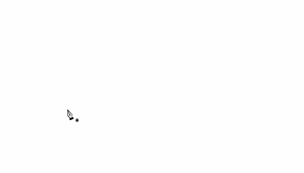
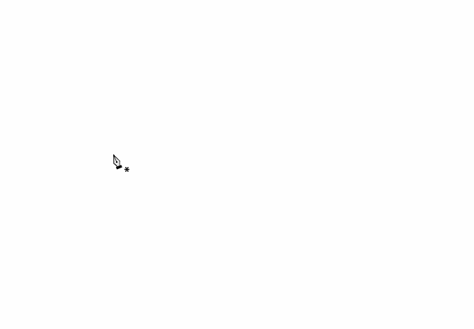
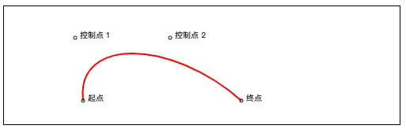

如何用 Canvas 绘制三阶贝塞尔曲线
今天谈谈贝塞尔曲线是什么以及它的原理，并说说如何用 Canvas 技术绘制一条三阶贝塞尔曲线。
贝塞尔曲线是什么？
贝塞尔曲线，是通过几个简单的参数描述一条曲线的一种参数曲线。
贝塞尔曲线是由 皮埃尔·贝塞尔 发明的，目的是辅助做汽车的主体设计，现如今已经被广泛使用在计算机辅助设计和计算机图形学系统中。
贝塞尔曲线是如何被绘制出来的？
贝塞尔曲线需要提供几个点的参数，首先是曲线的起点和终点。
然后再提供任意数量的控制点。
如果控制点数量为 0，我们称之为线性贝塞尔；
控制点数量为 1，则为二阶贝塞尔曲线；
控制点数量为 2，则为三阶贝塞尔曲线，依此类推。
我们设置好了起点、终点以及控制点后，贝塞尔曲线是如何通过这些点计算出曲线的呢？
贝塞尔曲线算法会按照起点、控制点 1、控制点 2、...、终点的顺序，相邻两点依次连接，产生 n 条直线（这也是 n 阶贝塞尔曲线命名的来源）。
然后我们会同时从每条直线的起点开始，向终点移动按比例拿到一个点。然后将这些点再连接，产生 n - 1 条直线。
就这样，我们继续同样的操作的，直到变成一条直线，然后我们按比例取到一个点，这个点就是曲线经过的点。
当我们比例一点点变大（从 0 到 1），就拿到了曲线中间的所有点，最终绘制出完整的曲线。
二阶贝塞尔曲线的绘制动画

三阶贝塞尔曲线的绘制动画

视觉设计上的使用
视觉设计工作中，最常使用的是三阶贝塞尔曲线，偶尔会使用二阶。
Photoshop、AI 等平面设计工具提供了绘制贝塞尔曲线的工具，并被命名为 “钢笔”、“曲线” 之类的名字，因为能更好地被记忆。
下面进行在 Photoshop 上用 “钢笔” 工具绘制一条三阶贝塞尔的操作演示，就画上面三阶贝塞尔绘制动画的那个曲线好了。
可以看到，在做视觉设计时，其实并不需要知道贝塞尔曲线的原理。你需要做的只是调整一下各个点，直到你觉得 “应该可以了” 为止。
当然一条贝塞尔曲线是无法完成复杂的曲线的，我们需要多个三阶贝塞尔配合。为了让连接处平滑，通常前一个曲线的控制点 2 和后一个曲线的控制点 1 是 点对称 的位置关系。
一般来说，曲线用的贝塞尔曲线数量越少，会越精致高端大气。因为那是极致的简约，不带一些多余。
以画个鸡蛋为例：
咻咻两下，只要两条贝塞尔曲线就把一个鸡蛋（可能是芒果）画好了。
用 Cavans 绘制三阶贝塞尔曲线
Canvas 提供了 bezierCurveTo() 方法来绘制三阶贝塞尔曲线。
ctx.bezierCurveTo(cp1x, cp1y, cp2x, cp2y, x, y);
bezierCurveTo 接受 6 个参数，依次为三阶贝塞尔曲线的 控制点 1、控制点 2、终点的 x 和 y 坐标。
诶，这个起点坐标哪去了？
其实起点在 画笔当前所停留的位置。这个位置可能是上次通过 moveTo() 到达的一个位置，也可能是上个贝塞尔曲线绘制后所抵达的终点坐标。
这里写个绘制三阶贝塞尔曲线的示例代码：
const canvas = document.querySelector("canvas");
const ctx = canvas.getContext("2d");
ctx.translate(100, 40);
const p1 = [0, 80]; // 起点
const p2 = [200, 80]; // 终点
const cp1 = [-10, 0]; // 控制点 1
const cp2 = [110, 0]; // 控制点 2
// 设置线条样式
ctx.strokeStyle = "red";
ctx.lineWidth = 2;
ctx.beginPath();
// 绘制贝塞尔曲线
ctx.moveTo(p1[0], p1[1]); // 画笔先落到曲线的起点位置
ctx.bezierCurveTo(cp1[0], cp1[1], cp2[0], cp2[1], p2[0], p2[1]);
ctx.stroke();
// 绘制辅助线
drawPoint(p1, "起点");
drawPoint(p2, "终点");
drawPoint(cp1, "控制点 1");
drawPoint(cp2, "控制点 2");
function drawPoint([x, y], text) {
ctx.save();
ctx.lineWidth = 1;
ctx.strokeStyle = "#000";
ctx.beginPath();
ctx.arc(x, y, 2, 0, Math.PI * 2);
ctx.stroke();
const OFFSET_X = 6;
ctx.fillText(text, x + OFFSET_X, y);
ctx.restore();
}
大部分是一些设置样式和绘制点的逻辑。
其中绘制三阶贝塞尔曲线的核心代码为：
ctx.moveTo(p1[0], p1[1]); // 画笔先落到曲线的起点位置
ctx.bezierCurveTo(cp1[0], cp1[1], cp2[0], cp2[1], p2[0], p2[1]);
ctx.stroke();
绘制的结果为：
贝塞尔曲线是描述曲线趋势的一种表达。
它非常简洁，能够用几个点描述出各种各样的曲线，在视觉设计领域被广泛应用。
同时它也成为计算机图形学中的基础模块，很多的图形标准比如 SVG、Canvas 都有三阶和二阶贝塞尔曲线的 API 标准。